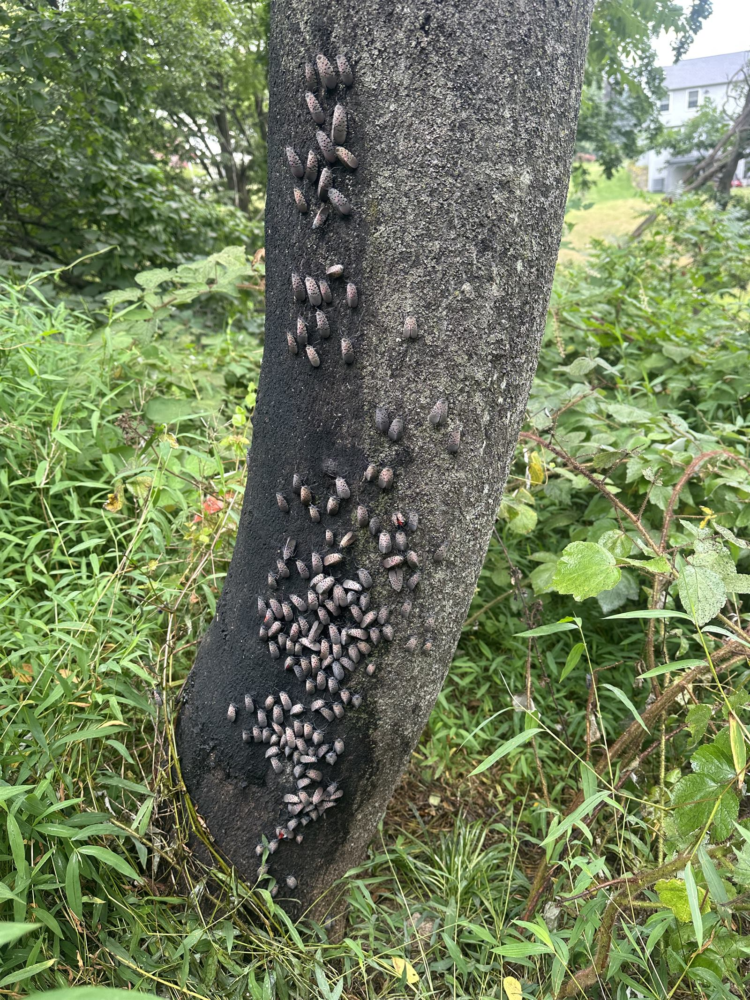
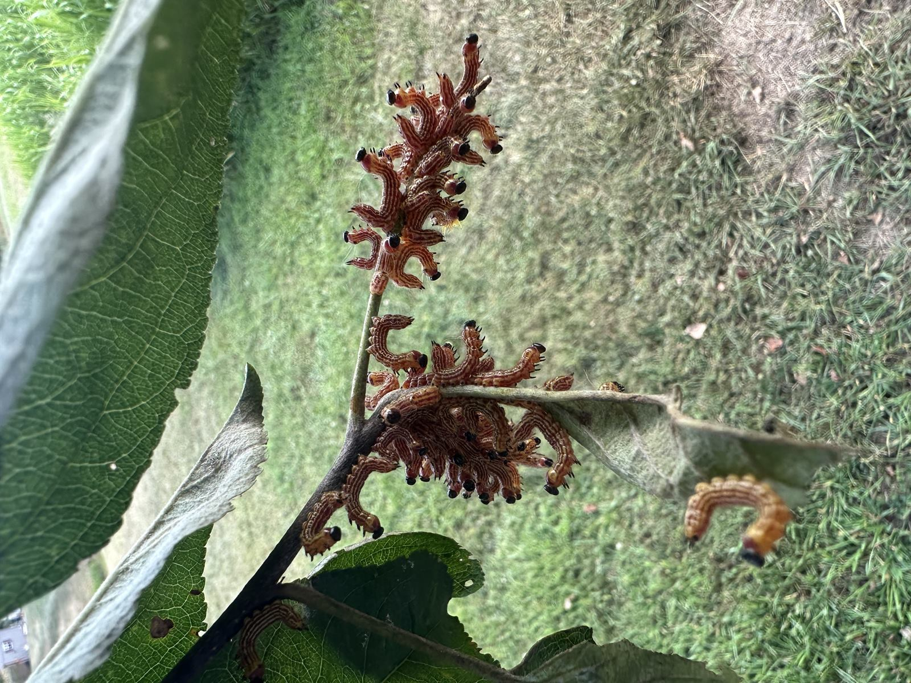

Targeted spotted lanternfly programs for Central PA properties — systemic trunk injections for high-value trees, foliar contact treatments for active swarms, egg-mass removal in winter, and Tree-of-Heaven host removal year-round. PA quarantine compliant.
Free Estimate — Call or Text 717-379-3248Spotted lanternfly (Lycorma delicatula) arrived in Pennsylvania in 2014 and Central PA is now firmly in the established zone. Every Dauphin, Cumberland, Lebanon, and York County property with maples, walnuts, willows, or Tree-of-Heaven is dealing with it. Year-round management is now standard — not a one-time spray.
An effective program combines four pieces: systemic injection in spring for high-value trees, contact treatment during peak adult swarms (August–October), egg-mass scraping in winter, and Tree-of-Heaven removal (the host species) where it's growing on your property. We design a program based on your specific trees and pressure.
What we don't do: blanket-spray everything. Lanternflies feed alongside honey bees on the same trees, and we're a working beekeeper. Pollinator-aware timing and product selection is non-negotiable.


For high-value trees (specimen maples, walnuts, sugar maples, ornamental cherries). Single spring injection moves through the vascular system and kills lanternflies feeding on the tree all season. No spray drift, pollinator-safe. Most cost-effective for trees worth protecting individually.
For acute infestations during peak adult swarms (late August through early October). Targeted application to the underside of affected leaves and bark where nymphs and adults cluster. Selected for fast knockdown and short residual to minimize pollinator exposure.
Mid-November through early March. We scrape and destroy egg masses on tree trunks, lawn furniture, vehicles, and outbuildings. The most pollinator-friendly intervention because no product is applied. Pairs well with spring systemic.
Spotted lanternfly's preferred host is the invasive Tree-of-Heaven (Ailanthus altissima). Removing TOH from your property reduces future lanternfly pressure significantly. We injection-treat then remove — straight cutting is counterproductive because TOH resprouts aggressively.
We walk the property, identify host trees, locate egg masses, and propose a treatment calendar. Plans are property-specific — a Hershey estate with mature maples needs a different plan than a Camp Hill borough lot with a single ornamental cherry.
Spotted lanternfly is not eradicable on a single property — it'll always re-enter from surrounding land. We design 2–3 year programs that keep populations below damaging thresholds. Year 2 and beyond cost less than Year 1 once host trees are addressed.
Dauphin County: Harrisburg, Hershey, Hummelstown, Palmyra, Linglestown, Colonial Park, Susquehanna Township, Lower Paxton.
Cumberland County: Camp Hill, Mechanicsburg, Carlisle, Lemoyne, Wormleysburg, Boiling Springs, Dillsburg, Enola.
Lebanon County: Lebanon, Annville, Cleona, Palmyra.
York County: Mount Wolf, Manchester, Dillsburg-area York side properties.
Locally owned. PA-licensed pesticide applicator (Category 6 — Ornamental & Shade Tree). Pollinator-aware programs. Serving all of Central Pennsylvania.
Call or Text 717-379-3248